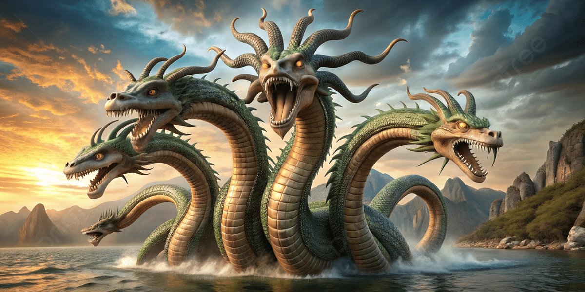
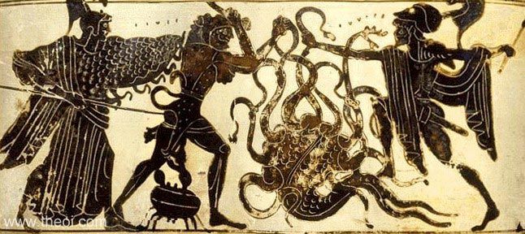
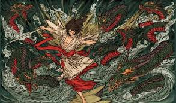
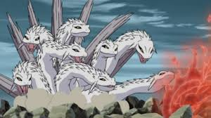
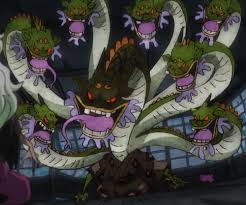
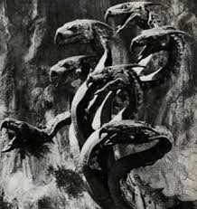
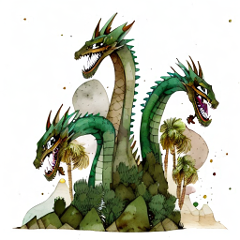
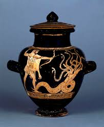
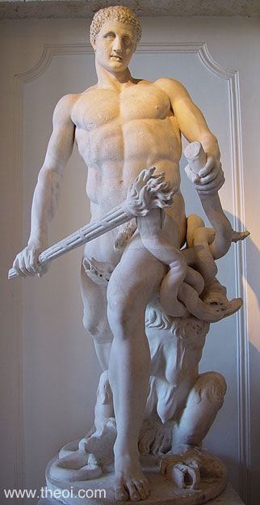

HYDRA

Introduction
The Lernaean Hydra or Hydra of Lerna (Ancient Greek: Λερναῖα ὕδρα, romanized: Lernaîa Húdrā), more often known simply as the Hydra, is a serpentine lake monster in Greek mythology and Roman mythology. Its lair was the lake of Lerna in the Argolid, which was also the site of the myth of the Danaïdes. Lerna was reputed to be an entrance to the Underworld,and archaeology has established it as a sacred site older than Mycenaean Argos. In the canonical Hydra myth, the monster is killed by Heracles (Hercules) as the second of his Twelve Labors
The Lernaean Hydra (Greek: Λερναία Ὕδρα, Lernaîa Hýdra), also simply known as the Hydra, was an ancient nameless serpent-like chthonic water beast, with reptilian traits, (as its name evinces) that possessed many heads. The poets mention more heads than the vase-painters could paint, and for each head cut off it grew two more, and poisonous breath so virulent even her tracks were deadly.
Literary
In Greek mythology, the Hydra of Lerna was killed by Heracles as the second of his Twelve Labors. Its lair was the lake of Lerna in the Argolid, though archaeology has borne out the myth that the sacred site was older even than the Mycenaean city of Argos since Lerna was the site of the myth of the Danaids. Beneath the waters was an entrance to the Underworld, and the Hydra was its guardian.
Ptolemy Hephaestion, New History Book 2 (summary from Photius, Myriobiblon 190) (trans. Pearse) (Greek mythographer C1st to C2nd A.D.) : "Aristonikos (Aristonicus) of Tarenton (Tarentum) says that the middle head of the Hydra was of gold."
Alcaeus, Fragment 443 (from Schoiast on Hesiod's Theogony) (trans. Campbell, Vol. Greek Lyric II) (Greek lyric C6th B.C.) : "The Hydra is called nine-headed by Alcaeus, fifty-headed by Simonides."

Pausanias, Description of Greece 2. 37. 4 (trans. Jones) (Greek travelogue C2nd A.D.) : ”At the source of the Amymone [near Lerna, Argolis] grows a plane tree, beneath which, they say, the Hydra (Water-snake) grew. I am ready to believe that this beast was superior in size to other water-snakes, and that its poison had something in it so deadly that Herakles treated the points of his arrows with its gall. It had, however, in my opinion, one head and not several. It was Peisander of Kamiros (Camirus) who, in order that the beat might appear more frightful and his poetry might be more remarkable, represented the Hydra with its many heads."
According to Hesiod, the Hydra was the offspring of Typhon and Echidna.It had poisonous breath and blood so virulent that even its scent was deadly.The Hydra possessed many heads, the exact number of which varies according to the source. Later versions of the Hydra story add a regeneration feature to the monster: for every head chopped off, the Hydra would regrow two heads.[5] Heracles required the assistance of his nephew Iolaus to cut off all of the monster's heads and burn the neck using a sword and fire
The lake was said to be bottomless. A later writer said that although the surface of the water appeared calm and peaceful any swimmer who tried to cross the lake was pulled under or swept away.
Lerna was more than just a marshy lake region, though. In Greek mythology, it was also a portal to the underworld.
These entrances to the underworld were thought to exist all over the living world, hidden in remote and dangerous locations. In addition to the natural dangers, the Greeks believed that such gateways were guarded by fearsome and hideous monsters who would kill any mortal who came too close.
By making its lair at Lerna, the Hydra served as one of many guardians to the realm of the dead. The monsters who watched over these sites served not only to keep the living from wandering into the lands of the dead, but also to make sure the souls of the dead could never escape.
Some obscure forums talk about alleged sightings of a "modern Lernaean Hydra" in dark lakes in the Balkans or Scandinavia, resembling the "Loch Ness Monster" but with multiple heads.
A modern myth says that the Atlantis civilization bred hybrid creatures for warfare, including the Hydra, which survived when Atlantis sank and migrated to the Mediterranean.
Partition
Sumerian
Sumerian and Akkadian poems mention that one of the monsters Ninurta killed was a seven-headed serpent, later described as one of his personal weapons, perhaps because he extracted its power or poison and used it in his subsequent battles, just as Hercules used the poison of the Hydra after killing it.
The legendary Mesopotamian serpent was part of a family of enormous reptiles known as the Three-Horned Serpents, creatures linked together in a series of destructive monsters born of the Echidna a symbol of the first chaos.
Basmu one of the greatest mythical serpents, was encountered by Ninurta on his journey into the mountains and killed. Basmu was described as a serpent with seven tongues in six mouths, an image that combined terror and supernatural power.
According to Akkadian texts, the people of Mesopotamia immortalized this monster in the sky, placing it among the stars to form the Hydra constellation, just as the Greeks did centuries later when they immortalized their monsters in the celestial constellations.
The article "Hydra, Cancer, and the Serpent" on Sumerian Origins This article discusses the similarities between constellations and mythological elements, and notes that the seven-headed serpent slain by Ninurta could be related to creatures such as Mušmaḫḫū and Basmu, and that this symbolism later evolved into the Greek "hydra" in Western mythology.
Japanese
Yamata no Orochi (Japanese: 八岐大蛇 / 八俣遠呂智) literally means "Great Eight-Branched Serpent" or "Eight-Segmented/Armed Serpent." This monster appears in ancient sources such as the Kojiki and Nihon Shoki, two of Japan's oldest mythological and historical records.

Yamata no Orochi is a gigantic serpent with eight heads and eight tails. It has bright red eyes and a red belly. The beast is so large that its body covers the distance of eight valleys and eight hills. Fir and cypress trees grow on its back, and its body is covered in moss.
Yamata no Orochi was said to rule over the region of Izumo in ancient Japan. According to legend, the gigantic serpent appeared every year — or once every several years — to demand a young daughter from an elderly couple as a sacrifice. He had already devoured seven of their daughters, leaving only the youngest, Kushinada-hime, as the last remaining victim.
The storm god Susanoo-no-Mikoto intervened to help the grieving parents. He devised a clever plan: he ordered the preparation of eight barrels of sake (Japanese rice wine) and placed them in different spots to lure the serpent. When Orochi arrived, it drank from all eight barrels, became intoxicated and fell asleep. Seizing the moment, Susanoo drew his sword and attacked, cutting off the serpent’s eight heads and eight tails.
While slicing through the creature’s body, he discovered a mystical sword hidden inside one of its tails. This blade became known as the Kusanagi-no-Tsurugi, later revered as one of the Three Sacred Treasures of the Japanese Imperial Regalia.
There is also a view that rivers such as the Hino River, Hii-gawa River, Inashi-gawa River, Gono-gawa River, Hakuta-gawa River, etc. from the system of Mt. Sentsu (also known as Mt. Torikami (鳥髪, or 鳥上)) located between Shimane and Tottori Prefectures and their tributaries were likened to a monster serpent with eight heads, and these rivers are called a group of Orochi rivers
But it is not usually mentioned that it regenerated its heads once it was cut off, and this is an important difference with the Greek hydra. But this does not make it nonexistent; perhaps it was not mentioned or was not found.
That's an interesting question you asked haha. First we must look at the context of Yamata no Woroti, or Yamata no Orochi/Worochi, which is extremely particular. This snake appears early in the Izumo myths, however it does not appear to originate from Izumo. In the Kojiki, Orochi is referred to as the Serpent. When Susanō asks about this he says "What shape does it have?" (其形如何 - sono katachi ikan ni) But here it is not mentioned that it is a kami or any other kind of creature. We also need to clarify one more thing. There are no "monsters".Often the terms used were violent kami, or generally earthly kami with terrifying aspects. There are cases of particular figures such as the Yomi creatures but they are not identifiable as monsters. Returning to Yamata no Orochi. In the second variant of the Nihonshoki when Yamata no Orochi shows up at the couple's house Susanō addresses the snake with a particular term: 「汝是可畏之神，敢不饗乎？」Here the word used is "Kashikomi Kami 可畏之神" In this passage it is implied that Yamata no Orochi may be a kami, but a kami to be feared.Although the word Kashikomi, can also come from the term referring to the awe for the deity (as appears in prayers) Considering that Yamata no Orochi is supposed to be a snake it has been thought that it could be a reference to the snake cult in ancient Japan, connected either to the floods of the Hii River,Or to some local kami.It has also been theorized that the fact that Yamata no Orochi actually had a sword inside its belly could be a symbol of an ancient tribe of iron workers who submitted, their submission would have given the ruling clan a sword, this would have been the prototype of the Kusan sword. I can't currently think of any shrines that venerate Yamata no Orochi, However, if I remember correctly, in the Susa shrine a bone of Yamata no Orochi is said to be preserved as a sacred relic. There are also images of Yamata no Orochi among the Kamiaritsuki, of course all the iconographic representations are modern.

Naruto : The name Orochimaru is derived from Yamata no Orochi, with the serpent serving as his main symbol in the anime. Orochimaru is one of the Three Legendary Sannin, known for his snake-like, ever-changing body and his mastery of techniques related to regeneration and immortality. He can summon giant snakes from his mouth and even shed his own skin like a serpent. In his ultimate battle against Sasuke Uchiha, Orochimaru transforms into a giant white multi-headed serpent, a direct reference to the mythical Yamata no Orochi. In that form, he attacks Sasuke with eight massive heads, each representing a different aspect of his power, perfectly mirroring the image of the ancient beast. Ultimately, he is slain or sealed by Sasuke’s Susanoo sword, a modern retelling of the ancient Japanese myth where the god Susanoo slays the giant serpent and discovers the sacred sword within its body. Symbolically, Orochimaru embodies humanity’s desire to transcend its natural limits, just as the serpent has long symbolized immortality and forbidden knowledge. His defeat by Susanoo represents a symbolic reenactment of the ancient epic, where divine order triumphs over cosmic chaos.
One pieceOrochi ate the Hebi Hebi no Mi, Model: Yamata no Orochi, a Mythical Zoan-type Devil Fruit that allowed him to transform into a full eight-headed snake and a human-eight-headed snake hybrid at will.He primarily used this power to intimidate people.
He portrays an arrogant, corrupt, and power-mad personality—just as Orochi is portrayed in some Japanese versions as a symbol of evil and tyranny.

Africa
Congo

A monster or fantasy species handed down in the legend of a minority tribe called the Nyang family living in the mountainous regions of the Republic of Zaire in central Africa .
A dragon from the Mwindo Epic. It is described as a large animal with black hide, teeth like a dog, the tail of an eagle and seven horned heads. In the Mwindo Epic, it made a blood pact with Nkuba, the Nyanga lightning god.
Amazigh
A young man arrived at an oasis under the blazing sun and found a girl crying beside the well. She told him she was the daughter of the sheikh and that the water belonged to a seven-headed hydra named Talafsa, who demanded a girl each year as a sacrifice; today was her turn. The young man comforted her, saying that perhaps Allah had other plans. Suddenly, Talafsa emerged from the water, spewing deadly venom that melted the hero’s armor, yet he stood firm and struck one of its heads with his sword. The hydra roared and grew new heads, and though the man fought bravely, he grew weaker with each strike. When the final head rose, sure of victory, the girl swiftly threw her bucket’s rope around its neck and tightened it, strangling the beast. The young man was nursed back to health, celebrated as a hero, and took the girl as his wife. Upon returning home, his brother marveled to see the orange trees blooming out of season — a sign of divine blessing.
Talafsa, the Water Dragon of North Africa, is a legendary creature from Libyan mythology, widely known across the Maghreb, especially in the tales of rural tribes. This dragon is said to dwell in forests and mountains or hide within springs and vital water sources used by villagers. As the mistress of wells and fountains, she can blackmail entire communities, demanding a yearly sacrifice of a young girl. Should the villagers refuse, they would all perish of thirst.
The Lernaean Hydra of Greek mythology shares many similarities — a seven-headed serpent with a deadly, poisonous breath that kills anyone who dares approach. It lives in swamps, and even stepping where it once walked could be fatal. Personally, it is regrettable that the ancient legends did not record the name of the hero who defeated Talafsa, for his feat seems far greater than that of Heracles. The Greek hero had the help of his nephew Iolaus, who cauterized each neck to stop new heads from growing, whereas the unnamed young man of the desert fought alone — and triumphed.
A comparative analysis between the narrative in question and the Greek myth of Heracles reveals striking structural and thematic similarities, prompting questions about the true origin of the story. Some hypotheses suggest that the Greek version might have been derived or adapted from older Amazigh oral traditions, later modified to fit within the Hellenic cultural framework. It is noteworthy that certain versions of the story omit the hero’s name entirely, which strengthens the possibility that the original figure might indeed have been Heracles himself. Several scholars and theorists have proposed that Heracles may have had Amazigh, rather than purely Greek, origins. This perspective opens a broader discussion on the distortion and reinterpretation of historical narratives to suit particular cultural or ideological contexts—a phenomenon evident across various historical and cultural domains.

Stories of the water dragon or many-headed monster existed in North Africa before the advent of Greek writing. In ancient Libyan mythology (pre-Greek colonization of Cyrenaica), there were beings known as "water ladies" or "spring spirits," to whom human sacrifices were offered to ensure the fertility of the land and the continuation of the water supply. This is quite similar to the story of Talavsa, and it is possible that the Greeks who settled in Cyrene (northern Libya) transferred this myth and reworked it into Greek form as the Hydra myth.
Some researchers (such as the French historian Bertholon and the Italian archaeologist Pugliese Carratelli) have suggested that Hercules (Heracles) may have been a Berber figure who was later "Greekized".
It is known that the Greeks settled in North African colonies (such as Cyrene, Cyrenaica, and Tripoli) in the 7th and 6th centuries BC. There is evidence of extensive cultural exchange between them and the Berber population, particularly in the religious and symbolic spheres. It is therefore natural that the story of Talavsa would be transmitted to the Greeks, transformed into the Hydra, and embellished with "Greek" heroic elements.
The omission of the name of the hero of Talavsa may indicate that the story was passed down orally in a culture that did not record individual heroes, but rather glorified collective or symbolic action (good defeating evil), unlike the Greeks, who focused on the individual hero (such as Heracles). This makes it easy to add the name "Heracles" later in the Greek version of the story.
It is very likely that the Greek myth of the Hydra has ancient Berber or Libyan roots, embodied in the story of the water dragon Talavsa, and that Hercules himself may have been derived from a North African hero who was adopted and reshaped into Greek mythology.
Research
Attic Red-Figure Vase — Antarctic painting on a Volute Krater (c. 490 BC) showing Heracles fighting the Hydra, holding a single head, with other dead dogs in the background. It presents a scene of fierce defiance.

Heracles battles the nine-headed Lernaean Hydra as one of his twelve labours. The hero wearing a lion-skin cape slices at the heads with his sword while his armoured squire Iolaus applies a burning brand to the neck stumps. A giant crab (which would become the constellation Cancer) nips at the hero with its claws. The goddess Athena stands behind him wearing a helm and snake-trimmed aegis cloak. This is a montage of several photos of the vase.
A statue depicting Hercules fighting the Hydra. This statue is a Roman copy of an ancient Greek statue from the 4th century BC.

A fine Roman terracotta oil lamp featuring a large decorated discus and angular volute nozzle. The scene upon the discus depicts a single figure, with well defined muscles, his arms outsretched as he battles an undulating snake. The scene is elegantly composed to fill the whole of the circular space available. The male figure is distinguishable as Hercules, from the lion-skin cloak he wears, the knotted paws visibly tied around his torso. The hero’s right arm is outstretched away from his body, his hand clenched around the head of a snake. This serpentine figure represents the Lernaean Hydra; whom Hercules was required to kill as part of his Twelve Labours. The decorative discus is surround by concentric circles, with an unusual, heart-shaped channel intersecting them, leading from the discus to the volute nozzle. The reverse features a slightly raised ring base, surrounding a marker’s mark that reads FAVSTI.